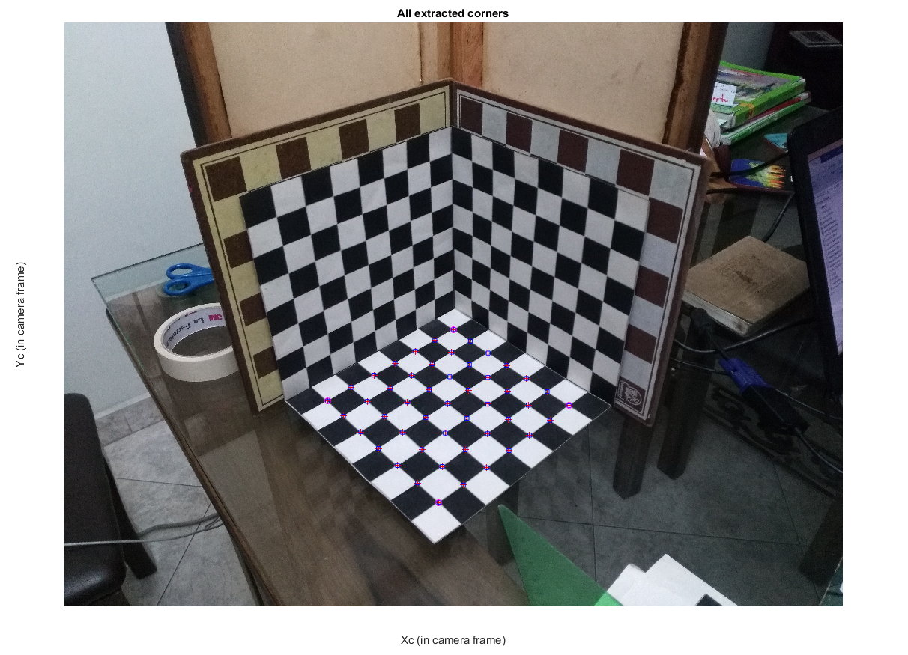
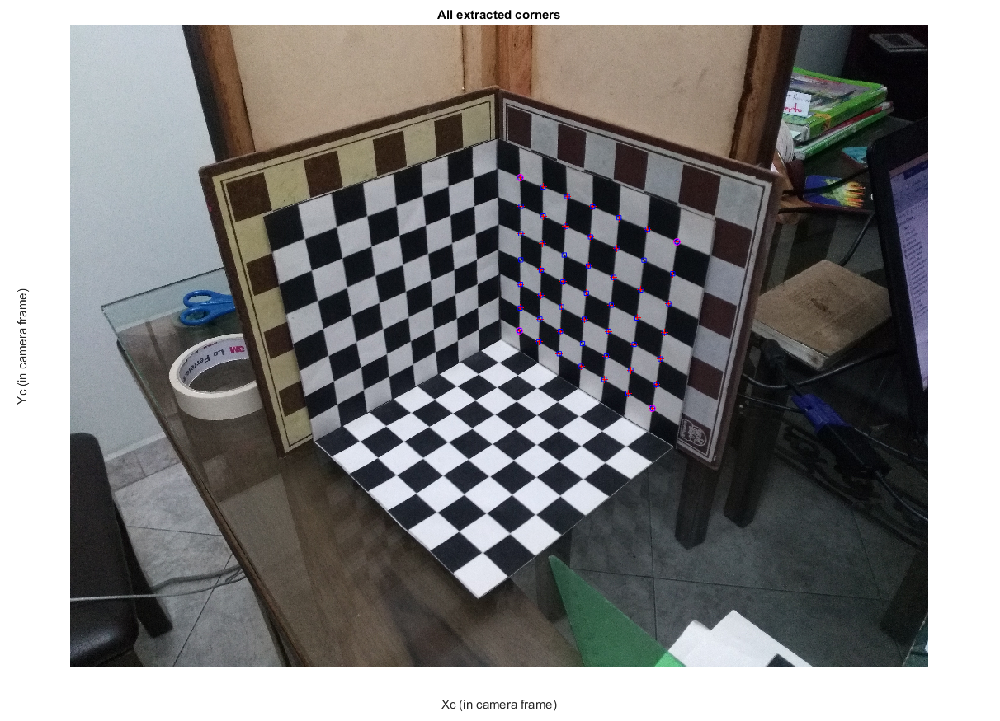
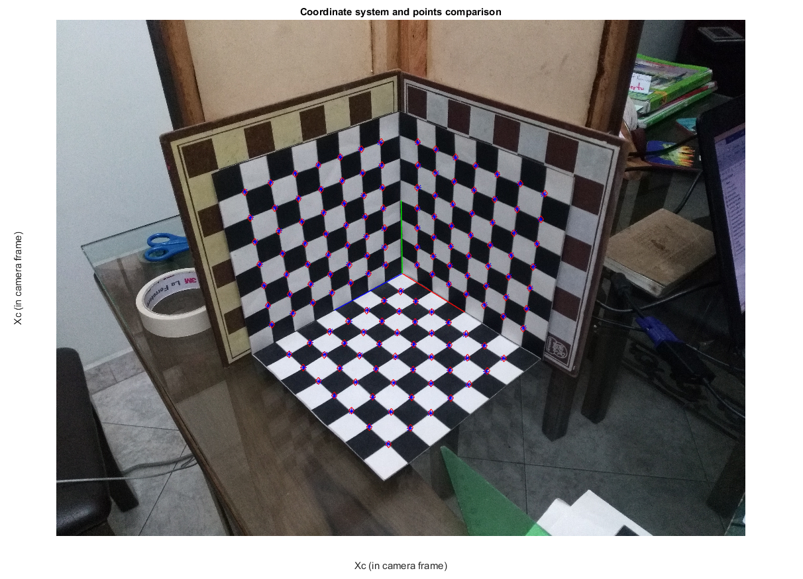
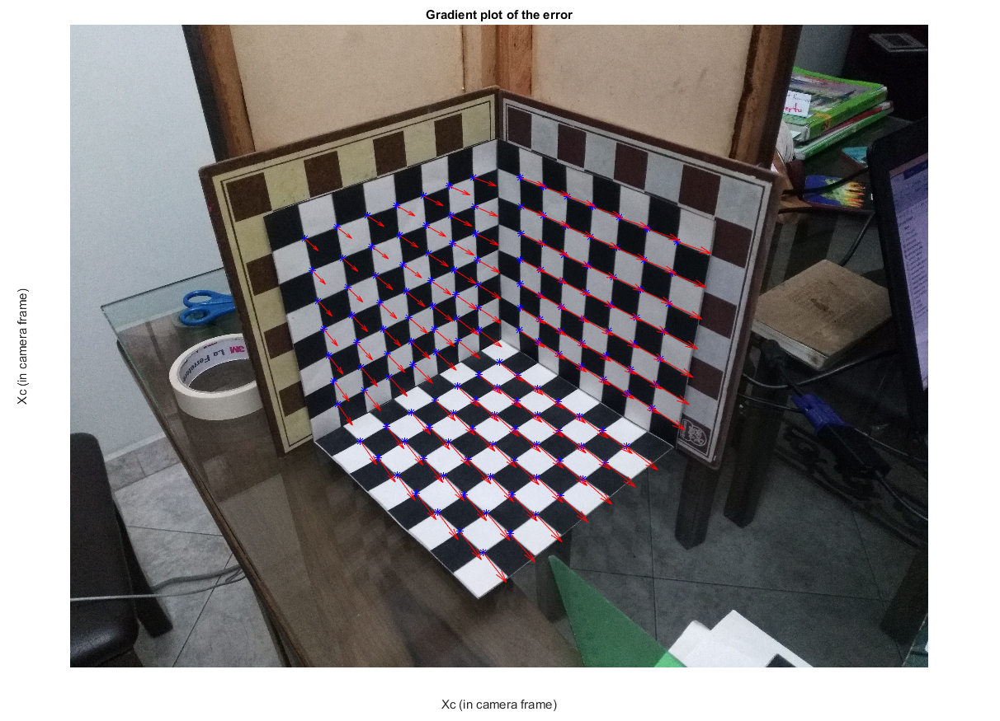
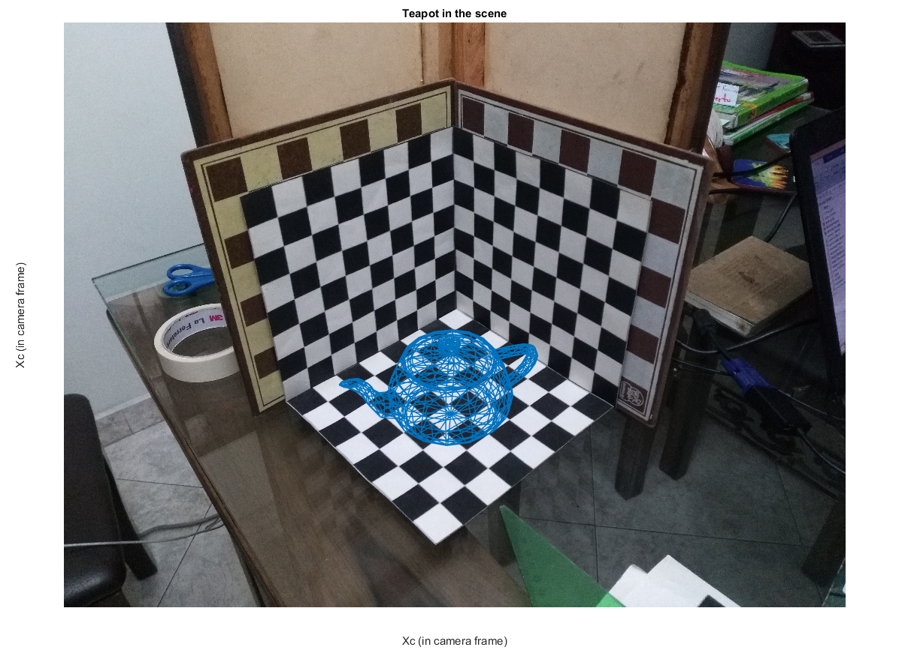

Contents
%%%%%%%%%%%%%%%%%%%%%%%%%%%%%%%%%%%%%%%%%%%%%%%%%%%%%%%%%%%%%%%%%%%%%%%% % % Tarea5 Camera Calibration: % % An ScenA Scene provided by Alejandro Madrid is used to develop a simple % algorithm which makes use of different common computer tools to determine % the properties of a camera. % % Those properties are its posistion, orientation, focal lenth, principal % point, s parameter among other. In few works it will be possible to % obtain the Intriic and Extrinsic parameters of the camera. % %%%%%%%%%%%%%%%%%%%%%%%%%%%%%%%%%%%%%%%%%%%%%%%%%%%%%%%%%%%%%%%%%%%%%%%%
Call functions and other files
addpath('Funciones') addpath('Objetos') addpath('Funciones\FindCorners') Escena = imread('Scena.jpg');
Initial Parameters
FileName = 'Scena.jpg'; % Name of the file which contain the scene to be use %Physical size of the targets in length units (Every square in the target) SquareSize = 25e-3; %[m] %Window size for corner detection in pixels CornerWindowSize = [10, 10]; %[pix] (Half size) %Smart sub-selection of corners from the target to avoid bloqued squares. %The units are on number of squares to the origin (See example images ...) SelectedSquaresXY = [ 1 1; 1 7; 7 7; 7 1]'; PlaneName = 'XY';
Example Borders
In the user wants, he can use these previously found values for the corners. Otherwise the user can delete the last parameter in the function findCornersChessTarget and it will ask the user to choose the corners
BorderXY = [1e3*[2.080929820076378 2.698367490445910 2.003294022370977 1.408170452083736];1e3*[1.640377128469363 2.047377878119838 2.563698472879467 2.023097345610006]]'; BorderYZ = [1e3*[2.178650750456217 2.181576070841100 2.942754850188952 2.823288321599506];1e3*[1.483785865847368 0.742643538207413 1.052979810447279 1.862723588435269]]'; BorderXZ = [1e3*[1.981997593402340 1.955952143187258 1.139314051218407 1.297041633566683];1e3*[1.482090629177878 0.742142730341926 1.039387429315705 1.842506087745998]]';
Compute Correspondances
[Pts2DXY, Pts3DXY] = findCornersChessTarget( FileName, SelectedSquaresXY ,... CornerWindowSize, SquareSize, 'XY', BorderXY); [Pts3DXY] = ArrangePts(Pts3DXY, 'XY'); [Pts2DYZ, Pts3DYZ] = findCornersChessTarget( FileName, SelectedSquaresXY ,... CornerWindowSize, SquareSize, 'YZ', BorderYZ); [Pts3DYZ] = ArrangePts(Pts3DYZ, 'YZ'); [Pts2DXZ, Pts3DXZ] = findCornersChessTarget( FileName, SelectedSquaresXY ,... CornerWindowSize, SquareSize, 'XZ', BorderXZ); [Pts3DXZ] = ArrangePts(Pts3DXZ, 'XZ');
Corner Extraction for outer squares... Corner extraction for inner squares... Warning: Image is too big to fit on screen; displaying at 25% Corner Extraction for outer squares... Corner extraction for inner squares... Warning: Image is too big to fit on screen; displaying at 25% Corner Extraction for outer squares... Corner extraction for inner squares... Warning: Image is too big to fit on screen; displaying at 25% 
Arrange Data for comparison
ImCoor = [Pts2DXY';Pts2DYZ';Pts2DXZ']; % In px worldCoor = [Pts3DXY';Pts3DYZ';Pts3DXZ']; % In mm
Estimate P
P = estimate_P( ImCoor, worldCoor);
Descompose P.
% [K,R,C] = decompose_P( P, 'modifiedQR'); [K,R,C] = decompose_P( P, 'Givens');
Coordinates system
Calculation of the coordinate system and evaluation of the selected points with the reals coordinates ones found by the estimated camera.
% Few points are add to find the coordinates vectors X = [worldCoor; [0,0,0];[0.1,0,0];[0,0.1,0];[0,0,0.1] ]; X = [X,ones(length(X),1)]; u=P*X'; % Calculates position for the real coordinates with the estimated camera u = u./repmat(u(3,:),3,1); figure, imshow(Escena), axis equal, xlabel ('Xc (in camera frame)'), ylabel ('Xc (in camera frame)'), title('Coordinate system and points comparison') hold on, plot(ImCoor(:,1),ImCoor(:,2),'b*') hold on, plot(u(1,1:147),u(2,1:147),'rd') plot(u(1,[length(u)-3,length(u)-2]),u(2,[length(u)-3,length(u)-2]),'b','LineWidth',1) plot(u(1,[length(u)-3,length(u)-1]),u(2,[length(u)-3,length(u)-1]),'r','LineWidth',1) plot(u(1,[length(u)-3,length(u)]),u(2,[length(u)-3,length(u)]),'g','LineWidth',1)
Warning: Image is too big to fit on screen; displaying at 25%
Camera Parameters
pixelSize=1.127e-6; % This one is an input from the user. It should at least know the pixel size in the detector U = K(1,3); % X coordinate principal point V = K(2,3); % Y coordinate principal point alpha= K(1,1); S=K(1,2); cott=S/-alpha; theta=atan(1/cott); beta=K(2,2)*sin(theta); R = C(1).^2+C(2).^2+C(3).^2; % Distance from the scene coordinate system to the camera F = [alpha*pixelSize beta*pixelSize]; % Focal length of the camera for x and y in [m]. fprintf('The principal point coordinates are (%f , %f)\n',U,V); fprintf('The calculated focal length are %f and %f mm, while the reference one is of 3.79 mm\n',F(1)*1e3,F(2)*1e3) fprintf('The camera is %f cm away of the scene origin\n', R*1e2) % RMS error for the x and Y coordinates for each coordinate in px. ErrorRMS_X = sqrt(sum((ImCoor(:,1)-u(1,1:length(ImCoor))').^2)/length(ImCoor)); ErrorRMS_Y = sqrt(sum((ImCoor(:,2)-u(2,1:length(ImCoor))').^2)/length(ImCoor)); fprintf('The RMS error in pixels is of %f en X and %f in Y\n',ErrorRMS_X,ErrorRMS_Y);
The principal point coordinates are (2058.195782 , 1595.736427) The calculated focal length are 3.892061 and 3.804798 mm, while the reference one is of 3.79 mm The camera is 45.619826 cm away of the scene origin The RMS error in pixels is of 3.005925 en X and 2.065178 in Y
Quiver plot
Plots the gradient of the error
figure, imshow(Escena), axis equal, xlabel ('Xc (in camera frame)'), ylabel ('Xc (in camera frame)'), title('Gradient plot of the error') hold on, plot(ImCoor(:,1),ImCoor(:,2),'b*') quiver(ImCoor(:,1),ImCoor(:,2),u(1,1:147)',u(2,1:147)','r')
Warning: Image is too big to fit on screen; displaying at 25%
Escene plot
With the new coordinate system plots a scene in the image used to estimate the camera.
SceneProperties.w = 4;
SceneProperties.h = 4;
SceneProperties.l = 4;
SceneProperties.N = 20;
SceneProperties.T = [0.08 0.08 0];
SceneProperties.A = [0 -pi/8 pi/2];
SceneProperties.ScaleFactor = 0.001;
[XN, L] = Gen_Scene ({'teapot.obj'},SceneProperties,2);
uN=P*XN;
uN=uN./repmat(uN(3,:),3,1);
figure, imshow(Escena), axis equal, xlabel ('Xc (in camera frame)'), ylabel ('Xc (in camera frame)'), title('Teapot in the scene')
hold on
for j=1:size(L,1),
line([uN(1,L(j,:))],[uN(2,L(j,:))],'LineWidth',1);
end
Reading Object file : teapot.obj % OBJ file created by ply_to_obj.c % Finished Reading Object file Warning: Image is too big to fit on screen; displaying at 25%